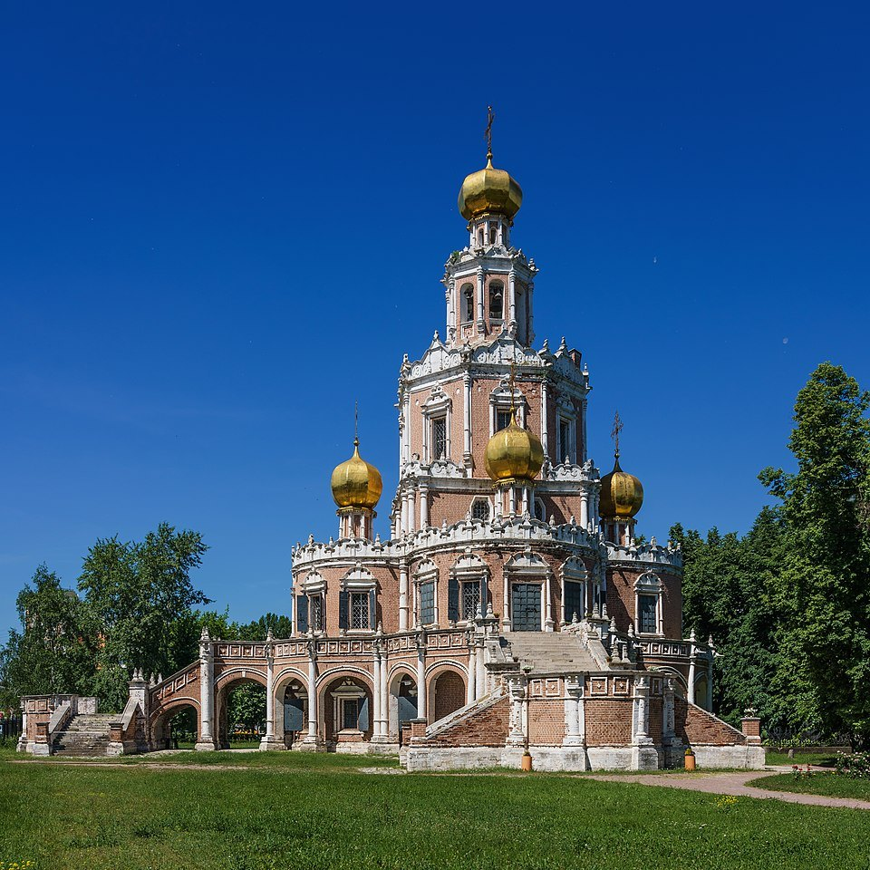
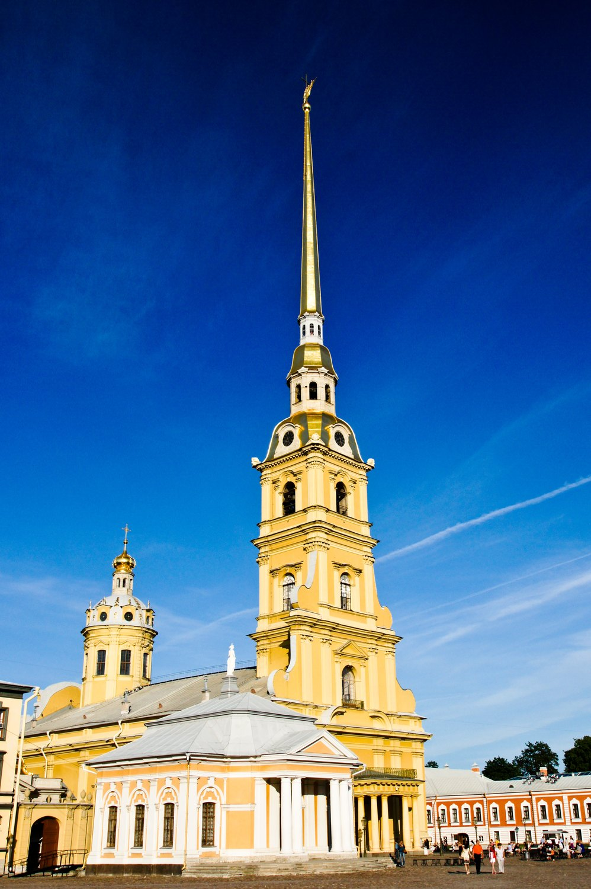
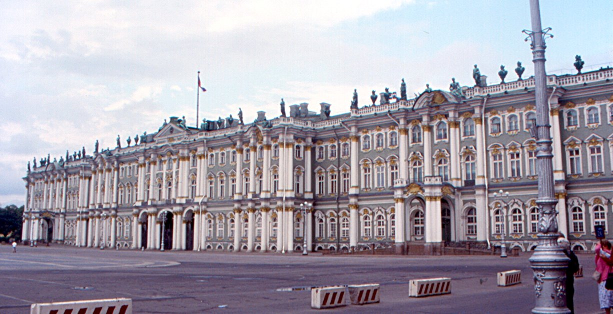

모스크바 · 나리시킨 바로크
러시아 바로크는 서유럽 바로크를 그대로 복제한 양식이 아니라 러시아 정교회 건축 전통과 서유럽의 바로크·고전주의적 요소가 단계적으로 결합한 독자적 전개를 보였다. 일반적으로 17세기 말의 나리시킨(모스크바) 바로크, 표트르 대제기의 페트린 바로크, 18세기 중엽의 엘리자베타 바로크를 구분하면 흐름이 가장 명확하다.
로마 가톨릭의 반종교개혁 미술이 아니라 러시아 정교회 건축과 결합한다.
표트르 대제 이후 서구화와 새로운 수도 상트페테르부르크 건설이 핵심 배경이 된다.
양파형 돔·수직적 교회형식과 서유럽 장식·오더가 혼합된다.
정치 중심의 이동과 함께 건축 언어도 크게 변한다.
18세기 중엽에는 황실 권위를 과시하는 거대한 궁정건축으로 발전한다.
모스크바 귀족 후원 아래 전통 러시아 교회형식과 서유럽 장식을 결합한다.
표트르 대제가 새 수도를 건설하며 서유럽 건축가와 기술자를 대거 끌어들인다.
네덜란드·독일·북유럽적 절제와 고전적 요소가 강한 새로운 제국 수도 건축이 형성된다.
라스트렐리를 중심으로 규모·색채·금장식·궁정적 화려함이 극대화된다.
예카테리나 2세 시대에는 바로크의 과잉장식보다 고전적 질서와 절제가 점차 우세해진다.



| 국가·지역·세부 사조 | 지역적 특징 | 대표 화가·제작자 |
|---|---|---|
| 출발 배경 |
| 정교회 전통 + 귀족 후원 + 표트르 이후 국가적 서구화 |
| 초기 핵심 |
| 전통 러시아 교회형식과 서구 장식의 결합 |
| 정치적 기능 |
| 러시아 제국의 서구화와 황실 권력 |
| 대표 중심지 |
| 모스크바 → 상트페테르부르크 |
| 한 문장 |
| “러시아 전통을 서구적 제국 언어로 변환한다.” |
러시아 바로크는 서유럽 바로크의 단순 수입이 아니라 모스크바 전통, 우크라이나·폴란드 경유 장식, 표트르 대제의 서구화, 제국 궁정 문화가 겹친 결과다.
본문에 이름이 등장하는 주요 화가는 아래처럼 대표작 한 점과 함께 읽어야 한다. 작품은 해당 사조의 핵심 특징을 실제 화면에서 확인하도록 고른 것이다.
건축 전체가 제국 권위와 궁정 장식을 한꺼번에 보여주는 러시아 바로크의 상징이다.
이콘의 전통적 얼굴에서 벗어나 개인과 국가 권력을 서유럽식 초상으로 제시한다.
바로크·로코코·신고전주의로 이어지는 러시아 세속 회화의 전환을 보여준다.